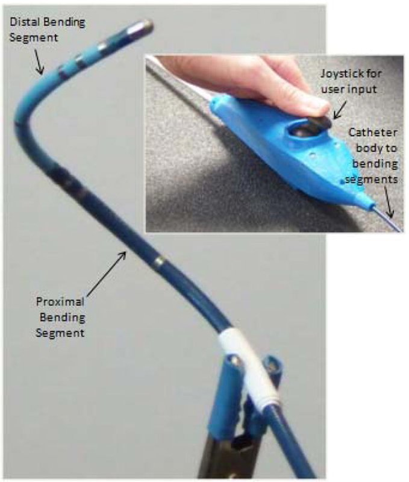

Actuated-tip devices · ncsu_sma_crews2012
SMA ablation cath.
NC State SMA-actuated robotic ablation catheter (Buckner lab)

1 / 6


- Family
- Actuated-tip devices (actuated-device)
- Devices
- own 2.7 mm catheter with two bending segments, each actuated by four offset SMA tendons (wiest2015 Sec. 2)
- Degrees of freedom
- 4 bending (two segments x bend angle and orientation)
- Push
- Tip-actuated
- Twist
- None
- Tested up to
- Bench
- Sim-to-real
- None found — No simulation-trained controller found for this robot.
Testing
- Highest level
- Bench
- What was tested
- bench: catheter submerged in a saline tank with EnSite patch electrodes; path optimisation repeated on four point sets; closed-loop control on one optimised 16-point path (wiest2015_path pp. 95-96); 2012: single-tendon rig (4 tendon offsets x 11 prestrains, 5 tests each) and four antagonistic rigs (crews2012_design p. 552-553)
- Key numbers
- path optimisation about 20 s; step response about 2 s with < 10 deg overshoot; mean steady-state tip error 5.5 mm, called unacceptably large by the authors; NavX uncertainty 7.1 +- 3.5 mm, imprecision +- 0.8 mm (wiest2015_path); 2012: optimal bend radius 7.0 mm (single-crystal model) and 7.6 mm (polycrystalline); experimental optimum prestrain about 3.5-4.5% and tendon offset about 1 mm (crews2012_design p. 555-556)
Mechanism
- Push (translation)
- tendon/tip-actuation (SMA tendons heated by PWM); no robotic insertion stage
- Twist (rotation)
- none
- Device range
- 90 and 180 degrees of omnidirectional bending for the proximal and distal segments (wiest2015_path p. 93); own 2.7 mm catheter
- Target anatomy
- endocardial RF ablation (left atrium)
Sensing and interface
- Force sensing
- none
- Leader and haptics
- joystick on the catheter handle
- Imaging
- modified EnSite NavX (St. Jude) electrode localisation (wiest2015_path p. 94); trakSTAR magnetic tracking on the 2012 test rigs (crews2012_design p. 552)
- Sterility
- N.R.
Size
- Footprint (mm)
- N.R.
- Mass (kg)
- N.R.
Simulation
- Simulation model
- yes: COMSOL finite-element models of SMA-actuated segments coupled to a genetic algorithm in MATLAB (single-crystal and polycrystalline free-energy SMA models), checked on wire rigs (crews2012_design p. 546-557); MATLAB simulations to tune the 2015 path optimiser (wiest2015_path Sec. 2.6)
- Sim-trained controller
- none found (simulation used for design optimisation, not for a controller)
Versions
- Lineage
- 2008 Veeramani, Buckner et al.: modelling (Smart Mater. Struct.) and design and control (ASME DSCC) of an SMA-actuated robotic catheter, cited by crews2012 and wiest2015 (not read); 2012 JIMSS design optimisation of single-tendon and antagonistic SMA segments in COMSOL with a genetic algorithm, tested on planar wire rigs (crews2012_design, full); 2015 RAS path optimisation and control of a two-segment, eight-tendon catheter (wiest2015_path, full); the lab's later bedside robot is robots_A3 portable_kantu2025 (NC State/NYU), predecessor of LegoBot
Sources
- Design optimization of a shape memory alloy–actuated robotic catheter · Journal of Intelligent Material Systems and Structures, 2012 · doi:10.1177/1045389x12436738 [crews2012_design]
- Path optimization and control of a shape memory alloy actuated catheter for endocardial radiofrequency ablation · Robotics and Autonomous Systems, 2015 · doi:10.1016/j.robot.2014.10.019 [wiest2015_path]
Notes
- Notes
- Seed-lineage row requested by the coordinator: the BIRO Lab robots (Kantu, LegoBot) descend from Buckner's NC State catheter work. | X2 2026-11-08: first_year 2012 -> 2008 from the lab's earlier SMA robotic-catheter papers cited in both full texts (not read). wiest2015 journal PDF matches the PMC manuscript. | X4 2026-11-08: first_year marked (inferred): Veeramani, Buckner et al. 2008 SMA robotic-catheter papers are cited by crews2012 and wiest2015 but not read
This record
- Read level
- full — full (crews2012_design, wiest2015_path journal PDFs)
- Picture
- wiest2015_path Fig. 1 (SMA catheter with handle and joystick); https://cdn.ncbi.nlm.nih.gov/pmc/blobs/efac/4326024/83bb6e389e21/nihms648507f1.jpg (PMC4326024) ↗ — licence: publisher copyright (Elsevier; NIH author manuscript in PMC); grade C
- Picture changes
- PMC figure image as is; not upscaled
- Found by
- gap: Gap searches for robots the other searches missed.
- Data
- JSON · YAML:
records/robots/ncsu_sma_crews2012.yaml - Correction
- Suggest a correction [repository not created yet]